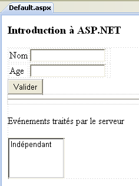
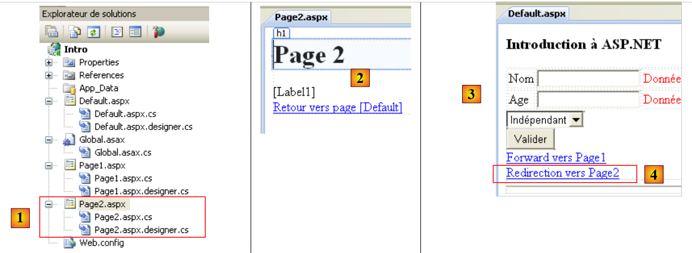

2. Una breve introducción a ASP.NET
En este apartado nos proponemos presentar, con ayuda de algunos ejemplos, los conceptos de ASP.NET que nos serán útiles en el resto del documento. Esta introducción no permite comprender las sutilezas de los intercambios cliente/servidor de una aplicación web. Para ello, puede consultarse:
- Programación ASP.NET [Desarrollo web con ASP.NET 1.1 (2004)]
Esta introducción está dirigida a quienes deseen avanzar rápidamente, aceptando, en un primer momento, dejar de lado algunos puntos que pueden ser importantes. El resto del documento permite profundizar en estos últimos. Quienes conozcan ASP.NET pueden pasar directamente al apartado 3.
2.1. Un proyecto de ejemplo
2.1.1. Creación del proyecto
 |
- en [1], se crea un nuevo proyecto con Visual Web Developer
- en [2], se elige un proyecto web en Visual C#
- en [3], se indica que se desea crear una aplicación web ASP.NET
- en [4], se le da un nombre a la aplicación. Se creará una carpeta para el proyecto con ese nombre.
- en [5], se indica la carpeta principal de la carpeta [4] del proyecto
 |
- en [6], el proyecto creado
- [Default.aspx] es una página web creada por defecto. Contiene etiquetas HTML y etiquetas ASP.NET
- [Default.aspx.cs] contiene el código de gestión de los eventos provocados por el usuario en la página [Defaul.aspx] mostrada en su navegador
- [Default.aspx.designer.cs] contiene la lista de componentes ASP.NET de la página [Default.aspx]. Cada componente ASP.NET incluido en la página [Default.aspx] da lugar a la declaración de dicho componente en [Default.aspx.designer.cs].
- [Web.config] es el archivo de configuración del proyecto ASP.NET.
- [References] es la lista de DLL utilizados por el proyecto web. Estos DLL son bibliotecas de clases que el proyecto va a utilizar. En [7] se encuentra la lista de DLL establecidas por defecto en las referencias del proyecto. La mayoría son innecesarias. Si el proyecto necesita utilizar una DLL que no aparece en [7], esta se puede añadir mediante [8].
2.1.2. La página [Default.aspx]
Si se ejecuta el proyecto mediante [Ctrl-F5], se muestra la página [Default.aspx] en un navegador:
 |
- en [1], la página URL del proyecto web. Visual Web Developer tiene un servidor web integrado que se inicia cuando se solicita la ejecución de un proyecto. Escucha en un puerto aleatorio, en este caso el 1490. El puerto de escucha suele ser el puerto 80. En [1], no se solicita ninguna página. En este caso, se muestra la página [Default.aspx], de ahí su nombre de página por defecto.
- En [2], la página [Default.aspx] está vacía.
- En Visual Web Developer, la página [Default.aspx] [3] se puede crear visualmente (pestaña [Design]) o mediante etiquetas (pestaña [Source])
- En [4], la página [Defaul.aspx] en modo [Design]. Se construye colocando en ella componentes que se encuentran en la caja de herramientas [5].
 |
El modo [Source] [6] da acceso al código fuente de la página:
<%@ Page Language="C#" AutoEventWireup="true" CodeBehind="Default.aspx.cs" Inherits="Intro._Default" %>
<!DOCTYPE html PUBLIC "-//W3C//DTD XHTML 1.0 Transitional//EN" "http://www.w3.org/TR/xhtml1/DTD/xhtml1-transitional.dtd">
<html xmlns="http://www.w3.org/1999/xhtml">
<head runat="server">
<title></title>
</head>
<body>
<form id="form1" runat="server">
<div>
</div>
</form>
</body>
</html>
- la línea 1 es una directiva ASP.NET que enumera algunas propiedades de la página
- la directiva Page se aplica a una página web. Hay otras directivas, como Application, WebService, ... que se aplican a otros objetos ASP.NET
- El atributo CodeBehind indica el archivo que gestiona los eventos de la página
- El atributo Language indica el lenguaje .NET utilizado por el archivo CodeBehind
- el atributo Inherits indica el nombre de la clase definida dentro del archivo CodeBehind
- El atributo AutoEventWireUp="true" indica que la vinculación entre un evento en [Default.aspx] y su controlador en [Defaul.aspx.cs] se realiza mediante el nombre del evento. Así, el evento Load de la página [Default.aspx] será procesado por el método Page_Load de la clase Intro._Default definida por el atributo Inherits.
- Las líneas 4-14 describen la página [Defaul.aspx] mediante etiquetas:
- HTML clásicas, como la etiqueta <body> o <div>
- ASP.NET. Estas son las etiquetas que tienen el atributo runat="server". Las etiquetas ASP.NET son procesadas por el servidor web antes de enviar la página al cliente. Se transforman en etiquetas HTML. Por lo tanto, el navegador del cliente recibe una página HTML estándar en la que ya no existen etiquetas ASP.NET.
La página [Default.aspx] se puede modificar directamente a partir de su código fuente. A veces es más sencillo que pasar por el modo [Design]. Modificamos el código fuente de la siguiente manera:
<%@ Page Language="C#" AutoEventWireup="true" CodeBehind="Default.aspx.cs" Inherits="Intro._Default" %>
<!DOCTYPE html PUBLIC "-//W3C//DTD XHTML 1.0 Transitional//EN" "http://www.w3.org/TR/xhtml1/DTD/xhtml1-transitional.dtd">
<html xmlns="http://www.w3.org/1999/xhtml">
<head runat="server">
<title>Introduction ASP.NET</title>
</head>
<body>
<h3>Introduction à ASP.NET</h3>
<form id="form1" runat="server">
<div>
</div>
</form>
</body>
</html>
En la línea 6, le damos un título a la página mediante la etiqueta <HTML>. En la línea 9, introducimos un texto en el cuerpo (<body>) de la página. Si ejecutamos el proyecto (Ctrl-F5), obtenemos el siguiente resultado en el navegador:
 |
2.1.3. Los archivos [Default.aspx.designer.cs] y [Default.aspx.cs]
El archivo [Default.aspx.designer.cs] declara los componentes de la página [Defaul.aspx]:
//------------------------------------------------------------------------------
// <auto-generated>
// Este código ha sido generado por una herramienta.
// Version del tiempo de ejecución: 2.0.50727.3603
//
// Los cambios realizados en este archivo pueden provocar un comportamiento incorrecto y se perderán si
// se vuelve a generar el código.
// </auto-generated>
//------------------------------------------------------------------------------
namespace Intro {
public partial class _Default {
/// <summary>
/// Control form1.
/// </summary>
/// <remarks>
/// Campo generado automáticamente.
/// Para modificarlo, mueva la declaración del campo del archivo de diseño al archivo de código subyacente.
/// </remarks>
protected global::System.Web.UI.HtmlControls.HtmlForm form1;
}
}
En este archivo se encuentra la lista de componentes ASP.NET de la página [Default.aspx] que tienen un identificador. Estos corresponden a las etiquetas de [Default.aspx] que tienen el atributo runat="server" y el atributo id. Así, el componente de la línea 23 anterior corresponde a la etiqueta
<form id="form1" runat="server">
de [Default.aspx].
El desarrollador interactúa poco con el archivo [Default.aspx.designer.cs]. No obstante, este archivo resulta útil para conocer la clase de un componente concreto. Así, se observa a continuación que el componente form1 es de tipo HtmlForm. El desarrollador puede entonces explorar esta clase para conocer sus propiedades y métodos. Los componentes de la página [Default.aspx] son utilizados por la clase del archivo [Default.aspx.cs]:
using System;
using System.Collections.Generic;
using System.Linq;
using System.Web;
using System.Web.UI;
using System.Web.UI.WebControls;
namespace Intro
{
public partial class _Default : System.Web.UI.Page
{
protected void Page_Load(object sender, EventArgs e)
{
}
}
}
Cabe señalar que la clase definida en los archivos [Default.aspx.cs] y [Default.aspx.designer.cs] es la misma (línea 10): Intro._Default. Es la palabra clave partial la que permite extender la declaración de una clase a varios archivos, en este caso dos.
En la línea 10, arriba, vemos que la clase [_Default] extiende la clase [Page] y hereda sus eventos. Uno de ellos es el evento Load, que se produce cuando el servidor web carga la página. En la línea 12, el método Page_Load gestiona el evento Load de la página. Normalmente es aquí donde se inicializa la página antes de mostrarla en el navegador del cliente. En este caso, el método Page_Load no hace nada.
La clase asociada a una página web, en este caso la clase Intro._Default, se crea al inicio de la solicitud del cliente y se destruye cuando se ha enviado la respuesta al cliente. Por lo tanto, no puede utilizarse para almacenar información entre dos solicitudes. Para ello hay que utilizar el concepto de sesión de usuario.
2.2. Los eventos de una página web ASP.NET
Creamos la siguiente página [Default.aspx]:
<%@ Page Language="C#" AutoEventWireup="true" CodeBehind="Default.aspx.cs" Inherits="Intro._Default" %>
<!DOCTYPE html PUBLIC "-//W3C//DTD XHTML 1.0 Transitional//EN" "http://www.w3.org/TR/xhtml1/DTD/xhtml1-transitional.dtd">
<html xmlns="http://www.w3.org/1999/xhtml">
<head runat="server">
<title>Introduction ASP.NET</title>
</head>
<body>
<h3>Introduction à ASP.NET</h3>
<form id="form1" runat="server">
<div>
<table>
<tr>
<td>
Nom</td>
<td>
<asp:TextBox ID="TextBoxNom" runat="server"></asp:TextBox>
</td>
<td>
</td>
</tr>
<tr>
<td>
Age</td>
<td>
<asp:TextBox ID="TextBoxAge" runat="server"></asp:TextBox>
</td>
<td>
</td>
</tr>
</table>
</div>
<asp:Button ID="ButtonValider" runat="server" Text="Valider" />
<hr />
<p>
Evénements traités par le serveur</p>
<p>
<asp:ListBox ID="ListBoxEvts" runat="server"></asp:ListBox>
</p>
</form>
</body>
</html>
El modo [Design] de la página es el siguiente:
 |
El archivo [Default.aspx.designer.cs] es el siguiente:
namespace Intro {
public partial class _Default {
protected global::System.Web.UI.HtmlControls.HtmlForm form1;
protected global::System.Web.UI.WebControls.TextBox TextBoxNom;
protected global::System.Web.UI.WebControls.TextBox TextBoxAge;
protected global::System.Web.UI.WebControls.Button ButtonValider;
protected global::System.Web.UI.WebControls.ListBox ListBoxEvts;
}
}
En él se encuentran todos los componentes ASP.NET de la página [Default.aspx] que tienen un identificador.
Modificamos el archivo [Default.aspx.cs] de la siguiente manera:
using System;
namespace Intro
{
public partial class _Default : System.Web.UI.Page
{
protected void Page_Init(object sender, EventArgs e)
{
// se registra el evento
ListBoxEvts.Items.Insert(0, string.Format("{0}: Page_Init", DateTime.Now.ToString("hh:mm:ss")));
}
protected void Page_Load(object sender, EventArgs e)
{
// se registra el evento
ListBoxEvts.Items.Insert(0, string.Format("{0}: Page_Load", DateTime.Now.ToString("hh:mm:ss")));
}
protected void ButtonValider_Click(object sender, EventArgs e)
{
// se registra el evento
ListBoxEvts.Items.Insert(0, string.Format("{0}: ButtonValider_Click", DateTime.Now.ToString("hh:mm:ss")));
}
}
}
La clase [_Default] (línea 5) gestiona tres eventos:
- el evento Init (línea 7), que se produce cuando se ha inicializado la página
- el evento Load (línea 13), que se produce cuando el servidor web ha cargado la página. El evento Init se produce antes del evento Load.
- el evento Click en el botón ButtonValider (línea 19), que se produce cuando el usuario hace clic en el botón [Valider]
La gestión de cada uno de estos tres eventos consiste en añadir un mensaje al componente Listbox denominado ListBoxEvts. Este mensaje muestra la hora del evento y su nombre. Cada mensaje se coloca al principio de la lista. Por lo tanto, los mensajes situados en la parte superior de la lista son los más recientes.
Al ejecutar el proyecto, se obtiene la siguiente página:
 |
En [1] se puede ver que los eventos Page_Init y Page_Load se produjeron en ese orden. Recordemos que el evento más reciente aparece en la parte superior de la lista. Cuando el navegador solicita la página [Default.aspx] directamente a través de su Url [2], lo hace mediante un comando HTTP (Protocolo de transferencia HyperText) denominado GET. Una vez cargada la página en el navegador, el usuario provocará eventos en la página. Por ejemplo, hará clic en el botón [Valider] [3]. Los eventos provocados por el usuario una vez que la página se ha cargado en el navegador desencadenan una solicitud a la página [Default.aspx], pero esta vez con un comando HTTP denominado POST. En resumen:
- la carga inicial de una página P en un navegador se realiza mediante una operación HTTP GET
- los eventos que se producen a continuación en la página generan cada vez una nueva solicitud hacia la misma página P, pero esta vez con un comando HTTP POST. Una página P puede saber si ha sido solicitada con un comando GET o con un comando POST, lo que le permite comportarse de forma diferente si es necesario, lo cual suele ser el caso.
Solicitud inicial de una página ASPX: GET
 |
- en [1], el navegador solicita la página ASPX mediante un comando HTTP GET sin parámetros.
- En [2], el servidor web le envía como respuesta el flujo HTML, que es la traducción de la página ASPX solicitada.
Tratamiento de un evento producido en la página mostrada por el navegador: POST
 |
- en [1], durante un evento en la página HTML, el navegador solicita la página ASPX ya obtenida con una operación GET, esta vez con un comando HTTP POST acompañado de parámetros. Estos parámetros son los valores de los componentes que se encuentran dentro de la etiqueta <form> de la página HTML mostrada por el navegador. A estos valores se les denomina «valores enviados por el cliente». La página ASPX los utilizará para procesar la solicitud del cliente.
- En [2], el servidor web le envía como respuesta el flujo HTML, que es la traducción de la página ASPX solicitada inicialmente por POST o bien de otra página si se ha producido una transferencia o redireccionamiento de página.
Volvamos a nuestra página de ejemplo:
 |
- en [2], la página se obtuvo mediante un GET.
- en [1], vemos los dos eventos que se produjeron durante este GET
Si, en lo anterior, el usuario hace clic en el botón [Valider] [3], se solicitará la página [Default.aspx] con un POST. Este POST irá acompañado de parámetros que serán los valores de todos los componentes incluidos en la etiqueta <form> de la página [Default.aspx]: los dos TextBox [TextBoxNom, TextBoxAge], el botón [ButtonValider], la lista [ListBoxEvts]. Los valores enviados para los componentes son los siguientes:
- TextBox: el valor introducido
- Botón: el texto del botón, en este caso el texto «Validar»
- Listbox: el texto del mensaje seleccionado en el ListBox
En respuesta al POST, se obtiene la página [4]. Vuelve a ser la página [Default.aspx]. Este es el comportamiento normal, a menos que haya una transferencia o redireccionamiento de página por parte de los gestores de eventos de la página. Se puede ver que se han producido dos nuevos eventos:
- el evento Page_Load, que se produjo al cargar la página
- el evento ButtonValider_Click, que se produjo al hacer clic en el botón [Valider]
Se puede observar que:
- el evento Page_Init no se produjo en la operación HTTP POST, mientras quesí se produjo en el evento HTTP GET
- el evento Page_Load se produce siempre, ya sea en un GET o en un POST. Es en este método donde, por lo general, necesitamos saber si se trata de un GET o de un POST.
- Al finalizar el POST, la página [Default.aspx] se ha devuelto al cliente con las modificaciones realizadas por los gestores de eventos. Siempre es así. Una vez procesados los eventos de una página P, esa misma página P se devuelve al cliente. Hay dos formas de eludir esta regla. El último gestor de eventos ejecutado puede
- transferir el flujo de ejecución a otra página P2.
- redirigir el navegador del cliente a otra página P2.
En ambos casos, es la página P2 la que se devuelve al navegador. Ambos métodos presentan diferencias sobre las que volveremos más adelante.
- El evento ButtonValider_Click se produjo después del evento Page_Load. Por lo tanto, es este gestor el que puede tomar la decisión de transferir o redirigir a una página P2.
- La lista de eventos [4] conservó los dos eventos mostrados durante la carga inicial GET de la página [Default.aspx]. Esto resulta sorprendente si se tiene en cuenta que la página [Default.aspx] se recreó durante el POST. Deberíamos encontrar la página [Default.aspx] con sus valores de diseño y, por lo tanto, un ListBox vacío. La ejecución de los gestores Page_Load y ButtonValider_Click debería añadir a continuación dos mensajes. Sin embargo, se encuentran cuatro. El mecanismo de VIEWSTATE explica esto. Durante el GET inicial, el servidor web envía la página [Default.aspx] con una etiqueta HTML <input type="hidden" ...> denominada campo oculto (línea 10 a continuación).
En el campo «id» de «__VIEWSTATE», el servidor web codifica el valor de todos los componentes de la página. Lo hace tanto en el GET inicial como en los POST siguientes. Cuando se produce un POST en una página P:
- el navegador solicita la página P enviando en su solicitud los valores de todos los componentes que se encuentran dentro de la etiqueta <form>. En el ejemplo anterior, se puede ver que el componente «__VIEWSTATE» se encuentra dentro de la etiqueta <form>. Por lo tanto, su valor se envía al servidor durante un POST.
- La página P se instancia e inicializa con sus valores de construcción
- el componente «__VIEWSTATE» se utiliza para devolver a los componentes los valores que tenían cuando la página P se envió anteriormente. Así, por ejemplo, la lista de eventos [4] recupera los dos primeros mensajes que tenía cuando se envió en respuesta al GET inicial del navegador.
- A continuación, los componentes de la página P adoptan como valores los valores enviados por el navegador. En ese momento, el formulario de la página P se encuentra en el estado en el que el usuario lo envió.
- Se procesa el evento Page_Load. Aquí añade un mensaje a la lista de eventos [4].
- Se procesa el evento que ha provocado el POST. Aquí, ButtonValider_Click añade un mensaje a la lista de eventos [4].
- Se devuelve la página P. Los componentes tienen como valor:
- o bien el valor enviado, c.a.d. el valor que el componente tenía en el formulario cuando este se envió al servidor
- o bien un valor proporcionado por uno de los gestores de eventos.
En nuestro ejemplo,
- los dos componentes TextBox recuperarán su valor enviado, ya que los gestores de eventos no los modifican
- la lista de eventos [4] recupera su valor enviado, c.a.d. todos los eventos ya inscritos en la lista, más dos nuevos eventos creados por los métodos Page_Load y ButtonValider_Click.
El mecanismo de VIEWSTATE se puede activar o desactivar a nivel de cada componente. Desactivémoslo para el componente [ListBoxEvts]:
 |
- En [1], el VIEWSTATE del componente [ListBoxEvts] está desactivado. El de los TextBox y [2] está activado por defecto.
- En [3], los dos eventos devueltos tras el GET inicial
 |
- en [4], se ha rellenado el formulario y se hace clic en el botón [Valider]. Se realizará un POST hacia la página [Default.aspx].
- en [6], el resultado devuelto tras hacer clic en el botón [Valider]
- El mecanismo de VIEWSTATE activado explica que TextBox y [7] hayan conservado su valor registrado en [4]
- el mecanismo desactivado del VIEWSTATE explica que el componente [ListBoxEvts] [8] no haya conservado su contenido [5].
2.3. Gestión de los valores enviados
Aquí nos centraremos en los valores enviados por los dos TextBox cuando el usuario hace clic en el botón [Valider]. La página [Default.aspx] en modo [Design] evoluciona de la siguiente manera:
 |
El código fuente del elemento añadido en [1] es el siguiente:
<p>
Eléments postés au serveur :
<asp:Label ID="LabelPost" runat="server"></asp:Label>
</p>
Utilizaremos el componente [LabelPost] para mostrar los valores introducidos en los dos TextBox y [2]. El código del gestor de eventos [Default.aspx.cs] evoluciona de la siguiente manera:
using System;
namespace Intro
{
public partial class _Default : System.Web.UI.Page
{
protected void Page_Init(object sender, EventArgs e)
{
// se registra el evento
ListBoxEvts.Items.Insert(0, string.Format("{0}: Page_Init", DateTime.Now.ToString("hh:mm:ss")));
}
protected void Page_Load(object sender, EventArgs e)
{
// se anota el evento
ListBoxEvts.Items.Insert(0, string.Format("{0}: Page_Load", DateTime.Now.ToString("hh:mm:ss")));
}
protected void ButtonValider_Click(object sender, EventArgs e)
{
// se anota el evento
ListBoxEvts.Items.Insert(0, string.Format("{0}: ButtonValider_Click", DateTime.Now.ToString("hh:mm:ss")));
// se muestra el nombre y la edad
LabelPost.Text = string.Format("nom={0}, age={1}", TextBoxNom.Text.Trim(), TextBoxAge.Text.Trim());
}
}
}
Línea 24, se actualiza el componente LabelPost:
- LabelPost es de tipo [System.Web.UI.WebControls.Label] (véase Default.aspx.designer.cs). Su propiedad Text representa el texto que muestra el componente.
- TextBoxNom y TextBoxAge son del tipo [System.Web.UI.WebControls.TextBox]. La propiedad Text de un componente TextBox es el texto que se muestra en el campo de entrada.
- El método Trim() elimina los espacios que pueden preceder o seguir a una cadena de caracteres
Como se ha explicado anteriormente, cuando se ejecuta el método ButtonValider_Click, los componentes de la página tienen el valor que tenían cuando el usuario envió la página. Por lo tanto, las propiedades Text de los dos TextBox tienen como valor los textos introducidos por el usuario en el navegador.
A continuación se muestra un ejemplo:
 |
- en [1], los valores enviados
- en [2], la respuesta del servidor.
- en [3], los TextBox han recuperado su valor enviado mediante el mecanismo del VIEWSTATE activado
- en [4], los mensajes del componente ListBoxEvts proceden de los métodos Page_Init, Page_Load, ButtonValider_Click y de un VIEWSTATE inhibido
- En [5], el componente LabelPost obtuvo su valor mediante el método ButtonValider_Click. Se han recuperado correctamente los dos valores introducidos por el usuario en los dos TextBox y [1].
Se observa arriba que el valor enviado para la edad es la cadena «yy», un valor no válido. Vamos a añadir a la página unos componentes llamados validadores. Sirven para verificar la validez de los datos enviados. Esta validez se puede verificar en dos lugares:
- en el cliente. Una configuración del validador permite solicitar o no que las comprobaciones se realicen en el navegador. En ese caso, se realizan mediante código integrado en la página. Cuando el usuario envía los valores introducidos en el formulario, estos se verifican primero mediante el código Javascript. Si alguna de las pruebas falla, no se ejecuta el POST. De este modo se evita un intercambio de datos con el servidor, lo que hace que la página sea más reactiva.
- en el servidor. Si bien las comprobaciones del lado del cliente pueden ser opcionales, en el lado del servidor son obligatorias, independientemente de si se han realizado comprobaciones en el lado del cliente. De hecho, cuando una página recibe valores enviados, no tiene forma de saber si han sido comprobados por el cliente antes de su envío. Por lo tanto, en el lado del servidor, el desarrollador debe comprobar siempre la validez de los datos enviados.
La página [Default.aspx] evoluciona de la siguiente manera:
<%@ Page Language="C#" AutoEventWireup="true" CodeBehind="Default.aspx.cs" Inherits="Intro._Default" %>
<!DOCTYPE html PUBLIC "-//W3C//DTD XHTML 1.0 Transitional//EN" "http://www.w3.org/TR/xhtml1/DTD/xhtml1-transitional.dtd">
<html xmlns="http://www.w3.org/1999/xhtml">
<head runat="server">
<title>Introduction ASP.NET</title>
</head>
<body>
<h3>Introduction à ASP.NET</h3>
<form id="form1" runat="server">
<div>
<table>
<tr>
<td>
Nom</td>
<td>
<asp:TextBox ID="TextBoxNom" runat="server"></asp:TextBox>
</td>
<td>
<asp:RequiredFieldValidator ID="RequiredFieldValidatorNom" runat="server"
ControlToValidate="TextBoxNom" Display="Dynamic"
ErrorMessage="Donnée obligatoire !"></asp:RequiredFieldValidator>
</td>
</tr>
<tr>
<td>
Age</td>
<td>
<asp:TextBox ID="TextBoxAge" runat="server"></asp:TextBox>
</td>
<td>
<asp:RequiredFieldValidator ID="RequiredFieldValidatorAge" runat="server"
ControlToValidate="TextBoxAge" Display="Dynamic"
ErrorMessage="Donnée obligatoire !"></asp:RequiredFieldValidator>
<asp:RangeValidator ID="RangeValidatorAge" runat="server"
ControlToValidate="TextBoxAge" Display="Dynamic"
ErrorMessage="Tapez un nombre entre 1 et 150 !" MaximumValue="150"
MinimumValue="1" Type="Integer"></asp:RangeValidator>
</td>
</tr>
</table>
</div>
<asp:Button ID="ButtonValider" runat="server" onclick="ButtonValider_Click"
Text="Valider" CausesValidation="False"/>
<hr />
<p>
Evénements traités par le serveur</p>
<p>
<asp:ListBox ID="ListBoxEvts" runat="server" EnableViewState="False">
</asp:ListBox>
</p>
<p>
Eléments postés au serveur :
<asp:Label ID="LabelPost" runat="server"></asp:Label>
</p>
<p>
Eléments validés par le serveur :
<asp:Label ID="LabelValidation" runat="server"></asp:Label>
</p>
<asp:Label ID="LabelErreursSaisie" runat="server" ForeColor="Red"></asp:Label>
</form>
</body>
</html>
Se han añadido validadores en las líneas 20, 32 y 35. En la línea 58, se utiliza un componente Label para mostrar los valores enviados válidos. En la línea 60, se utiliza un componente Label para mostrar un mensaje de error si hay errores de introducción de datos.
La página [Default.aspx] en modo [Design] es la siguiente:
 |
- Los componentes [1] y [2] son de tipo RequiredFieldValidator. Este validador comprueba que un campo de entrada no esté vacío.
- El componente [3] es de tipo RangeValidator. Este validador comprueba que un campo de entrada contenga un valor comprendido entre dos límites.
- En [4], las propiedades del validador [1].
Vamos a presentar los dos tipos de validadores a través de sus etiquetas en el código de la página [Default.aspx]:
<asp:RequiredFieldValidator ID="RequiredFieldValidatorNom" runat="server"
ControlToValidate="TextBoxNom" Display="Dynamic"
ErrorMessage="Donnée obligatoire !"></asp:RequiredFieldValidator>
- ID: el identificador del componente
- ControlToValidate: el nombre del componente cuyo valor se comprueba. En este caso, queremos que el componente TextBoxNom no tenga un valor vacío (cadena vacía o secuencia de espacios)
- ErrorMessage: mensaje de error que se mostrará en el validador en caso de datos no válidos.
- EnableClientScript: valor booleano que indica si el validador debe ejecutarse también en el lado del cliente. Este atributo tiene el valor True por defecto cuando no se establece explícitamente como se ha indicado anteriormente.
- Display: modo de visualización del validador. Hay dos modos:
- static (predeterminado): el validador ocupa espacio en la página aunque no muestre ningún mensaje de error
- dynamic: el validador no ocupa espacio en la página si no muestra ningún mensaje de error.
<asp:RangeValidator ID="RangeValidatorAge" runat="server"
ControlToValidate="TextBoxAge" Display="Dynamic"
ErrorMessage="Tapez un nombre entre 1 et 150 !" MaximumValue="150"
MinimumValue="1" Type="Integer"></asp:RangeValidator>
- Tipo: el tipo de los datos verificados. En este caso, la edad es un número entero.
- MinimumValue, MaximumValue: los límites entre los que debe estar el valor verificado
La configuración del componente que provoca el POST influye en el modo de validación. En este caso, dicho componente es el botón [Valider]:
<asp:Button ID="ButtonValider" runat="server" onclick="ButtonValider_Click" Text="Valider" CausesValidation="True" />
- CausesValidation: establece el modo automático o el nombre de las validaciones del lado del servidor. Este atributo tiene el valor predeterminado «True» si no se menciona explícitamente. En este caso,
- del lado del cliente, se ejecutan los validadores que tienen EnableClientScript en True. El POST solo se ejecuta si todos los validadores del lado del cliente tienen éxito.
- En el lado del servidor, todos los validadores presentes en la página se ejecutan automáticamente antes del procesamiento del evento que ha provocado el POST. En este caso, se ejecutarían antes de la ejecución del método ButtonValider_Click. En este método, es posible saber si todas las validaciones han tenido éxito o no. Page.IsValid es «True» si todas han tenido éxito, «False» en caso contrario. En este último caso, se puede detener el procesamiento del evento que ha provocado el POST. La página enviada se devuelve tal y como se ha introducido. Los validadores que hayan fallado muestran entonces su mensaje de error (atributo ErrorMessage).
Si CausesValidation tiene el valor False, entonces
- del lado del cliente, no se ejecuta ningún validador
- En el lado del servidor, es el desarrollador quien debe solicitar la ejecución de los validadores de la página. Para ello, utiliza el método Page.Validate(). En función del resultado de las validaciones, este método establece la propiedad Page.IsValid en «True» o «False».
En [Default.aspx.cs], el código de procesamiento de ButtonValider_Click evoluciona de la siguiente manera:
protected void ButtonValider_Click(object sender, EventArgs e)
{
// se registra el evento
ListBoxEvts.Items.Insert(0, string.Format("{0}: ButtonValider_Click", DateTime.Now.ToString("hh:mm:ss")));
// se muestra el nombre y la edad
LabelPost.Text = string.Format("nom={0}, age={1}", TextBoxNom.Text.Trim(), TextBoxAge.Text.Trim());
// ¿Es válida la página?
Page.Validate();
if (!Page.IsValid)
{
// mensaje de error global
LabelErreursSaisie.Text = "Veuillez corriger les erreurs de saisie...";
LabelErreursSaisie.Visible = true;
return;
}
// se oculta el mensaje de error
LabelErreursSaisie.Visible = false;
// se muestran el nombre y la edad validados
LabelValidation.Text = string.Format("nom={0}, age={1}", TextBoxNom.Text.Trim(), TextBoxAge.Text.Trim());
}
En el caso de que el botón [Valider] tenga su atributo CausesValidation en «True» y los validadores tengan su atributo EnableClientScript en «True», el método ButtonValider_Click solo se ejecuta cuando los valores enviados son válidos. Cabe preguntarse entonces cuál es el sentido del código que se encuentra a partir de la línea 8. Hay que recordar que siempre es posible escribir un cliente programado que envíe valores no verificados a la página [Default.aspx]. Por lo tanto, esta debe volver a realizar siempre las pruebas de validez.
- línea 8: inicia la ejecución de todos los validadores de la página. En caso de que el botón [Valider] tenga su atributo CausesValidation en True, esto se hace automáticamente y no es necesario volver a hacerlo. Aquí hay redundancia.
- líneas 9-15: caso en el que uno de los validadores ha fallado
- líneas 16-19: caso en el que todos los validadores han pasado
A continuación se muestran dos ejemplos de ejecución:
 |
- en [1], un ejemplo de ejecución en el caso de que:
- el botón [Valider] tiene su propiedad CausesValidation en True
- los validadores tienen su propiedad EnableClientScript establecida en True
Los mensajes de error [2] han sido mostrados por los validadores ejecutados en el lado del cliente mediante el código Javascript de la página. No se ha enviado ningún POST al servidor, tal y como muestra la etiqueta de los elementos enviados [3].
- En [4], un ejemplo de ejecución en el caso de que:
- el botón [Valider] tiene su propiedad CausesValidation establecida en False
- los validadores tienen su propiedad EnableClientScript establecida en False
Los mensajes de error [5] han sido mostrados por los validadores ejecutados en el lado del servidor. Como muestra [6], efectivamente se ha producido un POST hacia el servidor. En [7], el mensaje de error mostrado por el método [ButtonValider_Click] en caso de errores de entrada.
 |
- en [8], un ejemplo obtenido con datos válidos. [9,10] muestra que los elementos enviados han sido validados. Al realizar pruebas repetidas, es necesario establecer en False la propiedad EnableViewState de la etiqueta [LabelValidation] para que el mensaje de validación no permanezca visible a lo largo de las ejecuciones.
2.4. Gestión de datos de ámbito de la aplicación
Volvamos a la arquitectura de ejecución de una página ASPX:
 |
La clase de la página ASPX se instancia al inicio de la solicitud del cliente y se destruye al final de la misma. Por lo tanto, no puede utilizarse para almacenar datos entre dos solicitudes. Es posible que se desee almacenar dos tipos de datos:
- datos compartidos por todos los usuarios de la aplicación web. Por lo general, se trata de datos de solo lectura. Se utilizan tres archivos para implementar este intercambio de datos:
- [Web.Config]: el archivo de configuración de la aplicación
- [Global.asax, Global.asax.cs]: permite definir una clase, denominada clase global de la aplicación, cuya vida útil es la misma que la de la aplicación, así como gestores para determinados eventos de dicha aplicación.
La clase global de aplicación permite definir datos que estarán disponibles para todas las solicitudes de todos los usuarios.
- datos compartidos por las solicitudes de un mismo cliente. Estos datos se almacenan en un objeto denominado «Sesión». Se habla entonces de «sesión de cliente» para referirse a la memoria del cliente. Todas las solicitudes de un cliente tienen acceso a esta sesión. Pueden almacenar y leer información en ella
 |
Arriba mostramos los tipos de memoria a los que tiene acceso una página ASPX:
- la memoria de la aplicación, que contiene en su mayor parte datos de solo lectura y a la que pueden acceder todos los usuarios.
- la memoria de un usuario concreto, o sesión, que contiene datos de lectura/escritura y a la que pueden acceder las solicitudes sucesivas de un mismo usuario.
- Aunque no se muestra arriba, existe una memoria de solicitud, o contexto de solicitud. La solicitud de un usuario puede ser procesada por varias páginas ASPX sucesivas. El contexto de la solicitud permite que una página 1 transmita información a una página 2.
Aquí nos interesan los datos de ámbito de aplicación, aquellos que comparten todos los usuarios. La clase global de la aplicación se puede crear de la siguiente manera:
 |
- en [1], se añade un nuevo elemento al proyecto
- en [2], se añade la clase global de la aplicación
- en [3], se mantiene el nombre por defecto [Global.asax] para el nuevo elemento
 |
- en [4], se han añadido dos nuevos archivos al proyecto
- en [5], se muestra el marcado de [Global.asax]
<%@ Application Codebehind="Global.asax.cs" Inherits="Intro.Global" Language="C#" %>
- La etiqueta «Application» sustituye a la etiqueta «Page» que teníamos en [Default.aspx]. Identifica la clase de aplicación global
- Codebehind: define el archivo en el que se define la clase de aplicación global
- Inherits: define el nombre de esta clase
La clase Intro.Global generada es la siguiente:
using System;
namespace Intro
{
public class Global : System.Web.HttpApplication
{
protected void Application_Start(object sender, EventArgs e)
{
}
protected void Session_Start(object sender, EventArgs e)
{
}
protected void Application_BeginRequest(object sender, EventArgs e)
{
}
protected void Application_AuthenticateRequest(object sender, EventArgs e)
{
}
protected void Application_Error(object sender, EventArgs e)
{
}
protected void Session_End(object sender, EventArgs e)
{
}
protected void Application_End(object sender, EventArgs e)
{
}
}
}
- línea 5: la clase de aplicación global deriva de la clase HttpApplication
La clase se genera con plantillas de controladores de eventos de la aplicación:
- líneas 8, 38: gestionan los eventos Application_Start (inicio de la aplicación) y Application_End (fin de la aplicación cuando el servidor web se detiene o cuando el administrador descarga la aplicación)
- líneas 13, 33: gestionan los eventos Session_Start (inicio de una nueva sesión de cliente al llegar un nuevo cliente o al caducar una sesión existente) y Session_End (fin de una sesión de cliente, ya sea explícitamente por programación o implícitamente al superarse la duración permitida para una sesión).
- línea 28: gestiona el evento Application_Error (aparición de una excepción no gestionada por el código de la aplicación y transmitida al servidor)
- línea 18: gestiona el evento Application_BeginRequest (llegada de una nueva solicitud).
- línea 23: gestiona el evento Application_AuhenticateRequest (se produce cuando un usuario se ha autenticado).
El método [Application_Start] se utiliza a menudo para inicializar la aplicación a partir de la información contenida en [Web.Config]. El generado al crear inicialmente un proyecto tiene el siguiente aspecto:
<?xml version="1.0" encoding="utf-8"?>
<configuration>
<configSections>
</configSections>
<appSettings/>
<connectionStrings/>
<system.web>
</system.web>
<system.codedom>
</system.codedom>
<!--
-->
<system.webServer>
</system.webServer>
<runtime>
</runtime>
</configuration>
Para nuestra aplicación actual, este archivo es innecesario. Si lo eliminamos o le cambiamos el nombre, la aplicación seguirá funcionando con normalidad. Nos centraremos en las etiquetas de las líneas 8 y 9:
- <appsettings> permite definir un diccionario de información
- <connectionStrings> permite definir cadenas de conexión a bases de datos
Consideremos el siguiente archivo [Web.config]:
<?xml version="1.0" encoding="utf-8"?>
<configuration>
<configSections>
...
</configSections>
<appSettings>
<add key="cle1" value="valeur1"/>
<add key="cle2" value="valeur2"/>
</appSettings>
<connectionStrings>
<add connectionString="connectionString1" name="conn1"/>
</connectionStrings>
<system.web>
...
Este archivo puede ser utilizado por la siguiente clase global de aplicación:
using System;
using System.Configuration;
namespace Intro
{
public class Global : System.Web.HttpApplication
{
public static string Param1 { get; set; }
public static string Param2 { get; set; }
public static string ConnString1 { get; set; }
public static string Erreur { get; set; }
protected void Application_Start(object sender, EventArgs e)
{
try
{
Param1 = ConfigurationManager.AppSettings["cle1"];
Param2 = ConfigurationManager.AppSettings["cle2"];
ConnString1 = ConfigurationManager.ConnectionStrings["conn1"].ConnectionString;
}
catch (Exception ex)
{
Erreur = string.Format("Erreur de configuration : {0}", ex.Message);
}
}
protected void Session_Start(object sender, EventArgs e)
{
}
}
}
- líneas 8-11: cuatro propiedades estáticas P. Dado que la vida útil de la clase Global es la misma que la de la aplicación, cualquier consulta realizada a la aplicación tendrá acceso a estas propiedades P mediante la sintaxis Global.P.
- líneas 17-19: se puede acceder al archivo [Web.config] a través de la clase [System.Configuration.ConfigurationManager]
- líneas 17-18: recupera los elementos de la etiqueta <appSettings> del archivo [Web.config] a través del atributo key.
- línea 19: recupera los elementos de la etiqueta <connectionStrings> del archivo [Web.config] a través del atributo name.
Se puede acceder a los atributos estáticos de las líneas 8-11 desde cualquier gestor de eventos de las páginas ASPX cargadas. Los utilizamos en el gestor [Page_Load] de la página [Default.aspx]:
protected void Page_Load(object sender, EventArgs e)
{
// se registra el evento
ListBoxEvts.Items.Insert(0, string.Format("{0}: Page_Load", DateTime.Now.ToString("hh:mm:ss")));
// se recupera la información de la clase global de la aplicación
LabelGlobal.Text = string.Format("Param1={0},Param2={1},ConnString1={2},Erreur={3}", Global.Param1, Global.Param2, Global.ConnString1, Global.Erreur);
}
- línea 6: los cuatro atributos estáticos de la clase global de la aplicación se utilizan para alimentar una nueva etiqueta de la página [Default.aspx]
 |
Al ejecutarlo, obtenemos el siguiente resultado:
 |
Arriba vemos que los parámetros de [web.config] se han recuperado correctamente. La clase global de la aplicación es el lugar adecuado para almacenar información compartida por todos los usuarios.
2.5. Gestión de datos de ámbito de sesión
Aquí nos interesa cómo almacenar información a lo largo de las solicitudes de un usuario determinado:
 |
Cada usuario tiene su propia memoria, que se denomina sesión.
Hemos visto que la clase de aplicación global dispone de dos gestores para gestionar los eventos:
- Session_Start: inicio de una sesión
- Session_end: fin de una sesión
El mecanismo de la sesión se implementa de la siguiente manera:
- en la primera solicitud de un usuario, el servidor web crea un token de sesión que le asigna al usuario. Este token es una secuencia de caracteres única para cada usuario. El servidor lo envía en la respuesta a la primera solicitud del usuario.
- En las solicitudes siguientes, el usuario (el navegador web) incluye en su solicitud el token de sesión que se le ha asignado. De este modo, el servidor web es capaz de reconocerlo.
- Una sesión tiene una duración determinada. Cuando el servidor web recibe una solicitud de un usuario, calcula el tiempo transcurrido desde la solicitud anterior. Si este tiempo supera la duración de la sesión, se crea una nueva sesión para el usuario. Los datos de la sesión anterior se pierden. Con el servidor web IIS (Internet Information Server) de Microsoft, las sesiones tienen por defecto una duración de 20 minutos. El administrador del servidor web puede modificar este valor.
- El servidor web sabe que se trata de la primera solicitud de un usuario porque dicha solicitud no incluye un token de sesión. Es la única.
Cualquier página ASP.NET tiene acceso a la sesión del usuario a través de la propiedad Session de la página, de tipo [System.Web.SessionState.HttpSessionState]. Utilizaremos las siguientes propiedades P y métodos M de la clase HttpSessionState:
Nombre | Tipo | Función |
Item[String clé] | P | La sesión se puede estructurar como un diccionario. Item[clé] es el elemento de la sesión identificado por clave. En lugar de escribir [HttpSessionState].Item[clé], también se puede escribir [HttpSessionState].[clé]. |
Borrar | M | vacía el diccionario de la sesión |
Abandon | M | finaliza la sesión. La sesión ya no es válida. Se iniciará una nueva sesión con la próxima solicitud del usuario. |
Como ejemplo de memoria de usuario, vamos a contar el número de veces que un usuario hace clic en el botón [Valider]. Para obtener este resultado, es necesario mantener un contador en la sesión del usuario.
La página [Default.aspx] evoluciona de la siguiente manera:
 |
La clase global de aplicación [Global.asax.cs] evoluciona de la siguiente manera:
using System;
using System.Configuration;
namespace Intro
{
public class Global : System.Web.HttpApplication
{
public static string Param1 { get; set; }
...
protected void Application_Start(object sender, EventArgs e)
{
...
}
protected void Session_Start(object sender, EventArgs e)
{
// contador de solicitudes
Session["nbRequêtes"] = 0;
}
}
}
En la línea 19, se utiliza la sesión del usuario para almacenar un contador de solicitudes identificado por la clave «nbRequêtes». Este contador es actualizado por el gestor [ButtonValider_Click] de la página [Default.aspx]:
using System;
namespace Intro
{
public partial class _Default : System.Web.UI.Page
{
....
protected void ButtonValider_Click(object sender, EventArgs e)
{
// se registra el evento
ListBoxEvts.Items.Insert(0, string.Format("{0}: ButtonValider_Click", DateTime.Now.ToString("hh:mm:ss")));
// se muestra el nombre y la edad publicados
LabelPost.Text = string.Format("nom={0}, age={1}", TextBoxNom.Text.Trim(), TextBoxAge.Text.Trim());
// número de solicitudes
Session["nbRequêtes"] = (int)Session["nbRequêtes"] + 1;
LabelNbRequetes.Text = Session["nbRequêtes"].ToString();
// ¿Es válida la página?
Page.Validate();
if (!Page.IsValid)
{
...
}
...
}
}
}
- línea 16: se incrementa el contador de solicitudes
- línea 17: el contador se muestra en la página
A continuación se muestra un ejemplo de ejecución:
 |
2.6. Gestión de GET / POST en la carga de una página
Hemos dicho que hay dos tipos de solicitudes a una página ASPX:
- la solicitud inicial del navegador realizada con un comando HTTP GET. El servidor responde enviando la página solicitada. Supondremos que esta página es un formulario, c.a.d, y que en la página ASPX enviada hay una etiqueta <form runat="server"...>.
- Las siguientes solicitudes realizadas por el navegador en respuesta a determinadas acciones del usuario en el formulario. El navegador realiza entonces una solicitud HTTP POST.
Ya sea en una solicitud GET o en una solicitud POST, se ejecuta el método [Page_Load]. En el caso de GET, este método se utiliza habitualmente para inicializar la página enviada al navegador del cliente. A continuación, mediante el mecanismo de VIEWSTATE, la página permanece inicializada y solo es modificada por los gestores de eventos que provocan los POST. No es necesario reiniciar la página en Page_Load. De ahí la necesidad de que este método sepa si la solicitud del cliente es un GET o un POST.
Veamos el siguiente ejemplo. Se añade una lista desplegable a la página [Default.aspx]. El contenido de esta lista se definirá en el gestor Page_Load de la solicitud GET:
 |
La lista desplegable se declara en [Default.aspx.designer.cs] de la siguiente manera:
protected global::System.Web.UI.WebControls.DropDownList DropDownListNoms;
Utilizaremos los siguientes métodos M y propiedades P de la clase [DropDownList]:
Nombre | Tipo | Función |
Elementos | P | la colección de tipo ListItemCollection de los elementos de tipo ListItem de la lista desplegable |
SelectedIndex | P | el índice, que comienza en 0, del elemento seleccionado en la lista desplegable cuando se envía el formulario |
SelectedItem | P | el elemento de tipo ListItem seleccionado en la lista desplegable cuando se envía el formulario |
SelectedValue | P | el valor de tipo string del elemento de tipo ListItem seleccionado en la lista desplegable cuando se envía el formulario. Definiremos este concepto de valor más adelante. |
La clase ListItem de los elementos de una lista desplegable sirve para generar las etiquetas <option> de la etiqueta HTML <select>:
En la etiqueta <option>
- textei es el texto que se muestra en la lista desplegable
- vali es el valor enviado por el navegador si textei es el texto seleccionado en la lista desplegable
Cada option puede generarse mediante un objeto LisItem creado con el constructor ListItem(string texto, string valor).
En [Default.aspx.cs], el código del gestor [Page_Load] evoluciona de la siguiente manera:
protected void Page_Load(object sender, EventArgs e)
{
// se registra el evento
...
// se recupera la información de la clase global de la aplicación
...
// inicialización del combo de nombres solo durante el GET inicial
if (!IsPostBack)
{
for (int i = 0; i < 3; i++)
{
DropDownListNoms.Items.Add(new ListItem("nom"+i,i.ToString()));
}
}
}
- línea 8: la clase Page tiene un atributo IsPostBack de tipo booleano. En realidad, significa que la solicitud del usuario es un POST. Por lo tanto, las líneas 10-13 solo se ejecutan sobre el GET inicial del cliente.
- Línea 12: se añade a la lista [DropDownListNoms] un elemento de tipo ListItem (string texto, string valor). El texto que se mostrará para el elemento (i+1) será «nomi» y el valor enviado para este elemento, si se selecciona, será «i».
Se modifica el gestor [ButtonValider_Click] para mostrar el valor introducido mediante la lista desplegable:
protected void ButtonValider_Click(object sender, EventArgs e)
{
// se registra el evento
...
// se muestran los valores enviados
LabelPost.Text = string.Format("nom={0}, age={1}, combo={2}", TextBoxNom.Text.Trim(), TextBoxAge.Text.Trim(), DropDownListNoms.SelectedValue);
// número de consultas
...
}
En la línea 6, el valor enviado para la lista [DropDownListNoms] se obtiene con la propiedad SelectedValue de la lista. A continuación se muestra un ejemplo de ejecución:
 |
- en [1], el contenido de la lista desplegable después del GET inicial y justo antes del primer POST
- en [2], la página después del primer POST.
- en [3], el valor enviado para la lista desplegable. Corresponde al atributo value del ListItem seleccionado en la lista.
- en [4], la lista desplegable. Contiene los mismos elementos que tras el GET inicial. Esto se debe al mecanismo del VIEWSTATE.
Para comprender la interacción entre el VIEWSTATE de la lista DropDownListNoms y la prueba if (! IsPostBack) del gestor Page_Load de [Default.aspx], se invita al lector a repetir la prueba anterior con las siguientes configuraciones:
Caso | DropDownListNoms.EnableViewState | prueba if(! IsPostBack) en Page_Load de [Default.aspx] |
Las diferentes pruebas arrojan los siguientes resultados:
- este es el caso presentado anteriormente
- la lista se rellena durante el GET inicial, pero no durante los POST siguientes. Como EnableViewState es falso, la lista queda vacía tras cada POST
- la lista se rellena tanto tras el GET inicial como en los POST siguientes. Como EnableViewState es verdadero, tenemos 3 nombres tras el GET inicial, 6 nombres tras el primer POST, 9 nombres tras el segundo POST, ...
- La lista se completa tanto tras el GET inicial como en los POST posteriores. Como EnableViewState es incorrecto, la lista se rellena con solo 3 nombres en cada solicitud, ya sea la GET inicial o las POST siguientes. Se repite el comportamiento del caso 1. Por lo tanto, hay dos formas de obtener el mismo resultado.
2.7. Gestión del VIEWSTATE de los elementos de una página ASPX
Por defecto, todos los elementos de una página ASPX tienen su propiedad EnableViewState establecida en True. Cada vez que la página ASPX se envía al navegador del cliente, contiene el campo oculto __VIEWSTATE, cuyo valor es una cadena de caracteres que codifica el conjunto de valores de los componentes que tienen su propiedad EnableViewState establecida en True. Para minimizar el tamaño de esta cadena, se puede intentar reducir el número de componentes cuya propiedad EnableViewState sea True.
Recordemos cómo los componentes de una página ASPX obtienen sus valores al final de un POST:
- se instancia la página ASPX. Los componentes se inicializan con sus valores de diseño.
- el valor __VIEWSTATE enviado por el navegador se utiliza para dar a los componentes el valor que tenían cuando la página ASPX se envió al navegador la vez anterior.
- Los valores enviados por el navegador se asignan a los componentes
- Se ejecutan los controladores de eventos. Estos pueden modificar el valor de algunos componentes.
De esta secuencia se deduce que los componentes que:
- tienen su valor enviado
- tienen su valor modificado por un gestor de eventos
pueden tener su propiedad EnableViewState en Falso, ya que su valor de VIEWSTATE (paso 2) va a ser modificado por uno de los pasos 3 o 4.
La lista de componentes de nuestra página está disponible en [Default.aspx.designer.cs]:
namespace Intro {
public partial class _Default {
protected global::System.Web.UI.HtmlControls.HtmlForm form1;
protected global::System.Web.UI.WebControls.TextBox TextBoxNom;
protected global::System.Web.UI.WebControls.RequiredFieldValidator RequiredFieldValidatorNom;
protected global::System.Web.UI.WebControls.TextBox TextBoxAge;
protected global::System.Web.UI.WebControls.RequiredFieldValidator RequiredFieldValidatorAge;
protected global::System.Web.UI.WebControls.RangeValidator RangeValidatorAge;
protected global::System.Web.UI.WebControls.DropDownList DropDownListNoms;
protected global::System.Web.UI.WebControls.Button ButtonValider;
protected global::System.Web.UI.WebControls.ListBox ListBoxEvts;
protected global::System.Web.UI.WebControls.Label LabelPost;
protected global::System.Web.UI.WebControls.Label LabelValidation;
protected global::System.Web.UI.WebControls.Label LabelErreursSaisie;
protected global::System.Web.UI.WebControls.Label LabelGlobal;
protected global::System.Web.UI.WebControls.Label LabelNbRequetes;
}
}
El valor de la propiedad EnableViewState de estos componentes podría ser el siguiente:
Componente | Valor publicado | EnableViewState | ¿Por qué? |
TextBoxNom | valor introducido en el TextBox | False | el valor del componente se contabiliza |
TextBoxAge | Lo mismo | ||
RequiredFieldValidatorNom | ninguno | False | ausencia de valor del componente |
RequiredFieldValidatorAge | ídem | ||
RangeValidatorAge | ídem | ||
LabelPost | ninguna | False | obtiene su valor mediante un gestor de eventos |
LabelValidation | Lo mismo | ||
LabelErreursSaisie | ídem | ||
LabelGlobal | ídem | ||
LabelNbRequetes | ídem | ||
DropDownListNoms | «valor» del elemento seleccionado | True | queremos conservar el contenido de la lista a lo largo de las consultas sin tener que regenerarla |
ListBoxEvts | «value» del elemento seleccionado | False | el contenido de la lista es generado por un gestor de eventos |
ButtonValider | Texto del botón | False | el componente conserva su valor de diseño |
2.8. Reenviar de una página a otra
Hasta ahora, las operaciones GET y POST siempre devolvían la misma página [Default.aspx]. Vamos a considerar el caso en el que una solicitud es procesada por dos páginas ASPX sucesivas, [Default.aspx] y [Page1.aspx], y en el que es esta última la que se devuelve al cliente. Por otra parte, veremos cómo la página [Default.aspx] puede transmitir información a la página [Page1.aspx] a través de una memoria que denominaremos memoria de la solicitud.
 |
Creamos la página [Page1.aspx]:
 |
- en [1], añadimos un nuevo elemento al proyecto
- en [2], añadimos un elemento [Web Form] denominado [Page1.aspx] [3]
 |
- en [4], la página añadida
- en [5], la página una vez construida
El código fuente de [Page1.aspx] es el siguiente:
<%@ Page Language="C#" AutoEventWireup="true" CodeBehind="Page1.aspx.cs" Inherits="Intro.Page1" %>
<!DOCTYPE html PUBLIC "-//W3C//DTD XHTML 1.0 Transitional//EN" "http://www.w3.org/TR/xhtml1/DTD/xhtml1-transitional.dtd">
<html xmlns="http://www.w3.org/1999/xhtml">
<head id="Head1" runat="server">
<title>Page1</title>
</head>
<body>
<form id="form1" runat="server">
<div>
<h1>
Page 1</h1>
<asp:Label ID="Label1" runat="server"></asp:Label>
<br />
<asp:HyperLink ID="HyperLink1" runat="server" NavigateUrl="~/Default.aspx">Retour
vers page [Default]</asp:HyperLink>
</div>
</form>
</body>
</html>
- línea 13: una etiqueta que servirá para mostrar una información transmitida por la página [Default.aspx]
- línea 15: un enlace HTML a la página [Default.aspx]. Cuando el usuario hace clic en este enlace, el navegador solicita la página [Default.aspx] con una operación GET. A continuación, se carga la página [Default.aspx] como si el usuario hubiera escrito directamente Url en su navegador.
La página [Default.aspx] se enriquece con un nuevo componente de tipo LinkButton:
 |
El código fuente de este nuevo componente es el siguiente:
<asp:LinkButton ID="LinkButtonToPage1" runat="server" CausesValidation="False"
EnableViewState="False" onclick="LinkButtonToPage1_Click">Forward vers Page1</asp:LinkButton>
- CausesValidation="False": al hacer clic en el enlace se provocará un POST hacia [Defaul.aspx]. El componente [LinkButton] se comporta como el componente [Button]. En este caso, no queremos que al hacer clic en el enlace se activen los validadores.
- EnableViewState="False": no es necesario conservar el estado del enlace a lo largo de las solicitudes. Mantiene sus valores de diseño.
- onclick="LinkButtonToPage1_Click": nombre del método que, en [Defaul.aspx.cs], gestiona el evento Click en el componente LinkButtonToPage1.
El código del gestor LinkButtonToPage1_Click es el siguiente:
// a la página 1
protected void LinkButtonToPage1_Click(object sender, EventArgs e)
{
// se introduce información en el contexto
Context.Items["msg1"] = "Message de Default.aspx pour Page1";
// se pasa la solicitud a la Página 1
Server.Transfer("Page1.aspx",true);
}
En la línea 7, la solicitud se pasa a la página [Page1.aspx] mediante el método [Server.Transfer]. El segundo parámetro del método, que es true, indica que se debe pasar a [Page1.aspx] toda la información que se envió a [Default.aspx] durante POST. Esto permite, por ejemplo, que [Page1.aspx] tenga acceso a los valores enviados a través de una colección denominada Request.Form. La línea 5 utiliza lo que se denomina el contexto de la solicitud. Se accede a él a través de la propiedad Context de la clase Page. Este contexto puede servir de memoria entre las diferentes páginas que procesan la misma solicitud, en este caso [Default.aspx] y [Page1.aspx]. Para ello se utiliza el diccionario Items.
Cuando [Page1.aspx] se carga mediante la operación Server.Transfer("Page1.aspx",true), todo ocurre como si [Page1.aspx] hubiera sido llamada por un GET de un navegador. El gestor Page_Load de [Page1.aspx] se ejecuta normalmente. Lo utilizaremos para mostrar el mensaje generado por [Default.aspx] en el contexto de la solicitud:
using System;
namespace Intro
{
public partial class Page1 : System.Web.UI.Page
{
protected void Page_Load(object sender, EventArgs e)
{
Label1.Text = Context.Items["msg1"] as string;
}
}
}
En la línea 9, el mensaje insertado por [Default.aspx] en el contexto de la consulta se muestra en Label1.
A continuación se muestra un ejemplo de ejecución:
 |
- en la página [Default.aspx] [1], se hace clic en el enlace [2] que nos lleva a la página Page1
- en [3], se muestra la página Page1
- en [4], el mensaje creado en [Default.aspx] y mostrado por [Page1.aspx]
- en [5], la página URL mostrada en el navegador es la de la página [Default.aspx]
2.9. Redirección de una página a otra
Presentamos aquí otra técnica funcionalmente similar a la anterior: cuando el usuario solicita la página [Default.aspx] a través de una POST, recibe como respuesta otra página [Page2.aspx]. En el método anterior, la solicitud del usuario era procesada sucesivamente por dos páginas: [Default.aspx] y [Page1.aspx]. En el método de redireccionamiento de página que presentamos ahora, hay dos solicitudes distintas del navegador:
 |
- en [1], el navegador realiza una solicitud POST a la página [Default.aspx]. Esta procesa la solicitud y envía una respuesta denominada de redireccionamiento al navegador. Esta respuesta es un simple flujo HTTP (líneas de texto) que solicita al navegador que se redirija a otra Url [Page2.aspx]. [Default.aspx] no envía ningún flujo HTML en esta primera respuesta.
- En [2], el navegador realiza una solicitud GET a la página [Page2.aspx]. Esta se envía entonces como respuesta al navegador.
- Si la página [Default.aspx] desea transmitir información a la página [Page2.aspx], puede hacerlo a través de la sesión del usuario. A diferencia del método anterior, el contexto de la solicitud no es utilizable aquí, ya que hay dos solicitudes distintas y, por lo tanto, dos contextos distintos. Por lo tanto, hay que utilizar la sesión del usuario para que las páginas se comuniquen entre sí.
Al igual que se hizo con [Page1.aspx], añadimos al proyecto la página [Page2.aspx]:
 |
- en [1], se ha añadido [Page2.aspx] al proyecto
- en [2], el aspecto visual de [Page2.aspx]
- en [3], añadimos a la página [Default.aspx] un componente LinkButton [4] que redirigirá al usuario a [Page2.aspx].
El código fuente de [Page2.aspx] es similar al de [Page1.aspx]:
<%@ Page Language="C#" AutoEventWireup="true" CodeBehind="Page2.aspx.cs" Inherits="Intro.Page2" %>
<!DOCTYPE html PUBLIC "-//W3C//DTD XHTML 1.0 Transitional//EN" "http://www.w3.org/TR/xhtml1/DTD/xhtml1-transitional.dtd">
<html xmlns="http://www.w3.org/1999/xhtml">
<head id="Head1" runat="server">
<title>Page2</title>
</head>
<body>
<form id="form1" runat="server">
<div>
<h1>
Page 2</h1>
<asp:Label ID="Label1" runat="server"></asp:Label>
<br />
<asp:HyperLink ID="HyperLink1" runat="server" NavigateUrl="~/Default.aspx">Retour
vers page [Default]</asp:HyperLink>
</div>
</form>
</body>
</html>
En [Default.aspx], la incorporación del componente LinkButton generó el siguiente código fuente:
<asp:LinkButton ID="LinkButtonToPage2" runat="server"
onclick="LinkButtonToPage2_Click">Redirection vers Page2</asp:LinkButton>
El gestor [LinkButtonToPage2_Click] es el que se encarga de la redirección a [Page2.aspx]. Su código en [Defaul.aspx.cs] es el siguiente:
protected void LinkButtonToPage2_Click(object sender, EventArgs e)
{
// se introduce un mensaje en la sesión
Session["msg2"] = "Message de [Default.aspx] pour [Page2.aspx]";
// redirigimos al cliente a [Page2.aspx]
Response.Redirect("Page2.aspx");
}
- línea 4: se inserta un mensaje en la sesión del usuario
- línea 5: el objeto Response es una propiedad de cualquier página ASPX. Representa la respuesta enviada al cliente. Posee un método Redirect que hace que la respuesta enviada al cliente sea una orden de redireccionamiento HTTP.
Cuando el navegador reciba la orden de redireccionamiento a [Page2.aspx], ejecutará GET en esta página. En esta, se ejecutará el método [Page_Load]. Lo utilizaremos para recuperar el mensaje introducido por [Default.aspx] en la sesión y mostrarlo. El código [Page2.aspx.cs] es el siguiente:
using System;
namespace Intro
{
public partial class Page2 : System.Web.UI.Page
{
protected void Page_Load(object sender, EventArgs e)
{
// se muestra el mensaje introducido en la sesión por [Default.aspx]
Label1.Text = Session["msg2"] as string;
}
}
}
Al ejecutarlo, se obtienen los siguientes resultados:
 |
- en [1], se hace clic en el enlace de redireccionamiento de [Default.aspx]. Se realiza un POST hacia la página [Default.aspx]
- en [2], el navegador ha sido redirigido a [Page2.aspx]. Esto se aprecia en el URL mostrado por el navegador. En el método anterior, este Url era el de [Default.aspx], ya que la única solicitud realizada por el navegador fue hacia este Url. Aquí hay un primer POST hacia [Default.aspx], y luego, sin que el usuario lo sepa, un segundo GET hacia [Page2.aspx].
- En [3], se ve que [Page2.aspx] ha recuperado correctamente el mensaje introducido por [Default.aspx] en la sesión.
2.10. Conclusión
Hemos introducido, con ayuda de algunos ejemplos, los conceptos de ASP.NET que nos serán útiles en el resto del documento. Esta introducción no permite comprender las sutilezas de los intercambios cliente/servidor de una aplicación web. Para ello, se puede consultar:
- Programación ASP.NET [Développement WEB avec ASP.NET 1.1 ]